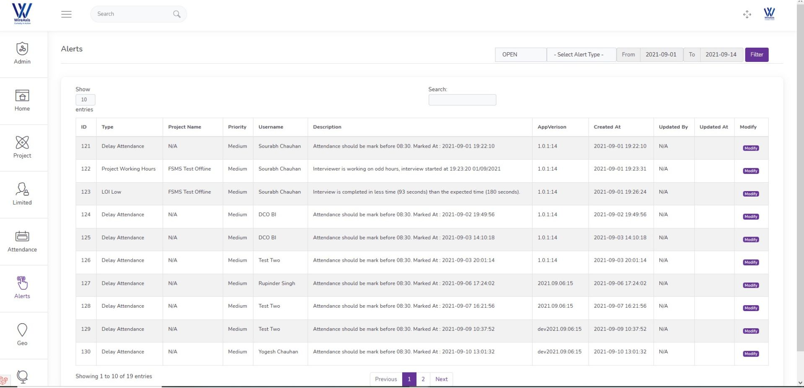

StreakEye offers advanced solutions beyond basic field management, tailored for research and field projects.
Ensuring impactful results and top-notch data quality through innovation and precision.
Geo Attendance
The system is designed in such a manner that you can track and evaluate the accurate time your employee spends on the job. The selfie feature allows you in this process with date, time, and location regarding information of the employee's attendance to avoid manipulation.

Live Tracker System
Keep tabs on your team and field force. Know the specifics like workforce attendance, productive hours, total distance traveled, and location etcetera anytime anywhere. Allocate geofences at the entry/exit points at get alerted whenever your executives pass through there.

Data Visualizing
Visualizing data through dashboards is a very modern approach to analyzing and organizing your marketing data. Dashboards simplify the analysis process by gathering all data and displaying it in one location. We have also learned a great deal from these tools and applied those learnings in the development our own products.

Chat System
A chat system offers several benefits, including real-time interaction with participants, quicker data collection, increased respondent engagement, and the ability to gather qualitative insights efficiently. Additionally, it provides support from administrators for location-specific guidance and instructions.
Live Streaming
Live streaming in market research provides real-time data collection, instant feedback, and a global reach, enabling businesses to capture authentic insights efficiently. This approach enhances research accuracy and enables quick decision-making based on actionable data.

Notice Board
It offers several advantages. It helps in communicating important updates and instructions to field workers efficiently, ensuring everyone is well-informed. Additionally, it facilitates real-time collaboration and coordination, enhancing productivity and data quality in offline data collection processes.
Alerts and Notifications
By alerting teams to critical events or deviations in real-time, they enable quick response and decision-making, leading to enhanced project efficiency and quality. These alerts also help in preventing potential issues, ensuring smoother operations and better outcomes for the project overall.

Forms / Surveys / Tasks
Our open survey/form allows for unlimited responses from any location, without any restrictions and Tasks involve pre-assigned survey/form for specific locations and are limited to a set number of respondents.
.jpg)